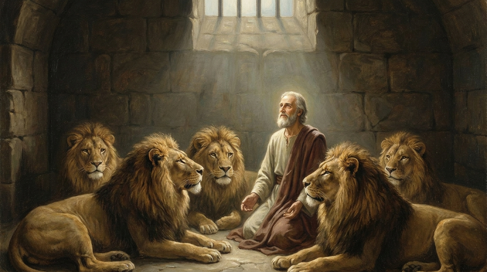

Fé no Exílio e Visões do Futuro
O livro de Daniel relata a experiência de jovens judeus exilados na Babilônia que decidem manter sua fé inabalável em Deus, mesmo sob ameaça de morte em fornalhas ardentes ou covas de leões. O livro é um poderoso testemunho de que Deus é soberano sobre a história humana e sobre todos os reis da terra. Na segunda metade, o livro transita para o gênero apocalíptico, revelando visões detalhadas sobre a ascensão e queda dos grandes impérios mundiais, culminando na vitória final do Reino de Deus que jamais será destruído.
Ficha Técnica
- Autor: O profeta e estadista Daniel.
- Tema Principal: A soberania absoluta de Deus sobre as nações, a fidelidade em meio a uma cultura hostil e visões do tempo do fim.
- Versículo-Chave: "Na época desses reis, o Deus dos céus estabelecerá um reino que jamais será destruído e que nunca será dominado por nenhum outro povo. Destruirá todos esses reinos e os exterminará, mas esse reino durará para sempre." (Daniel 2:44)
Estrutura
- A fidelidade de Daniel e seus amigos na corte da Babilônia (Caps. 1-6)
- A visão dos quatro animais e do Ancião de Dias (Cap. 7)
- Visões adicionais sobre reinos futuros (carneiro e bode) (Cap. 8)
- A oração de Daniel e a profecia das setenta semanas (Cap. 9)
- Conflitos espirituais, reis do norte e do sul, e o fim dos tempos (Caps. 10-12)